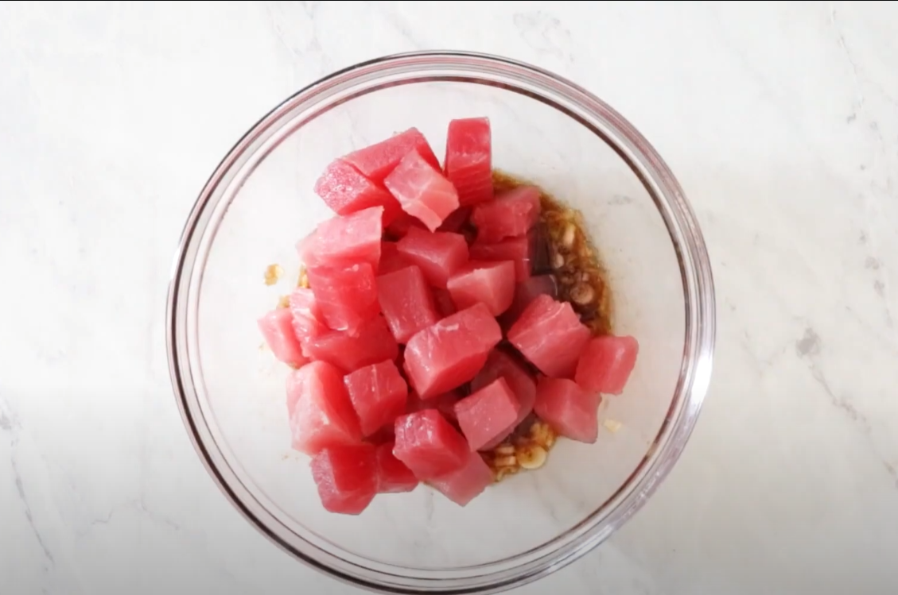
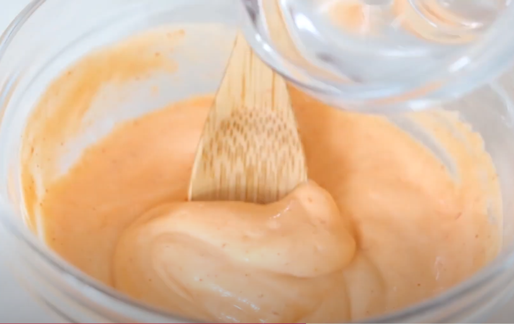
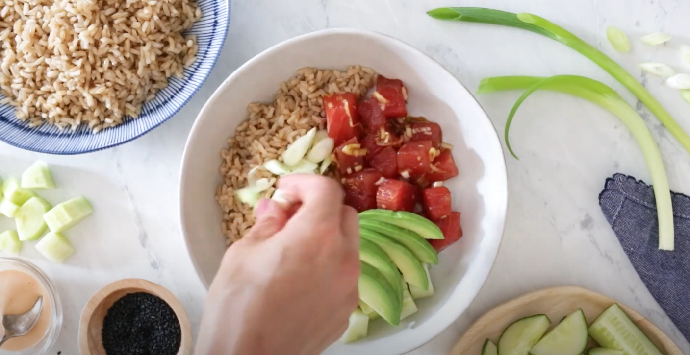
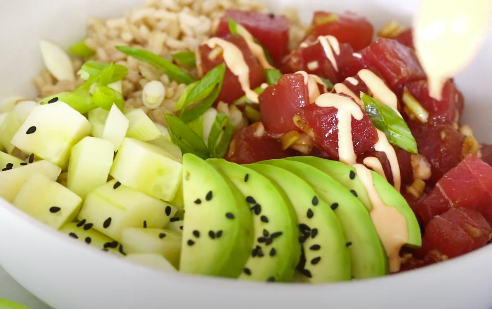

Enlace al menú
Enlace al menú
Spicy Tuna Poke
Indice
Ingredientes
- 230 g de atún
- 1/4 taza de cebolletas en rodajas
- 2 cucharadas de salsa de soja
- 1 cucharadita de aceite de sésamo
- 2 cucharadas de mayonesa ligera
- 3/2 cucharaditas de salsa sriracha
- 1 taza de arroz integral de grano corto cocido o arroz blanco para sushi
- 1 taza de pepinos pelados y cortados en cubos
- 1/2 aguacate cortado en rodajas
- 1 cucharadita de semillas de sésamo negro
Paso a Paso
- En un tazón mediano, combine el atún con cebolletas, salsa de soja, aceite de sésamo y sriracha. Mezcle suavemente para combinar y reserve mientras prepara los tazones.

- En un tazón pequeño, combine la mayonesa y la sriracha, diluida con un poco de agua.

- En un bol, agrega el arroz, atun, aguacate, los pepinos y las cebolletas

- Por ultimo, para decorar agrega las semillas de sesamo y la mayonesa picante

Resultado final

Enlace a la parte de arriba